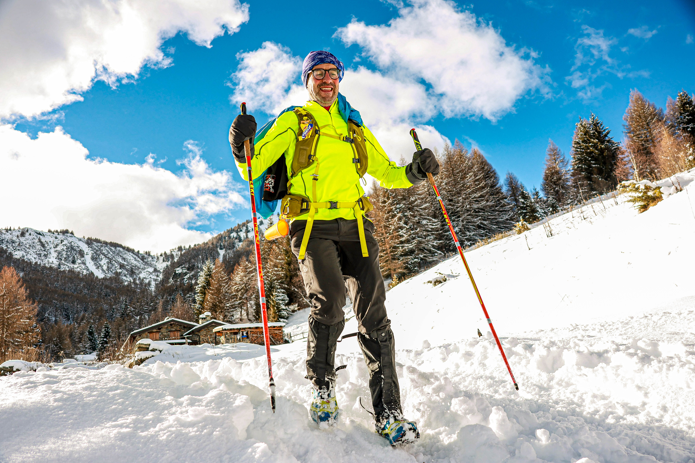

The heaviest snowfall of the winter arrived just days before the start, blanketing Italy's Alta Valle Camonica in white and threading the course's forest sections with natural tunnels of snow-bent branches. By race morning the sky had cleared, and the ninth edition of La Grande Corsa Bianca — a semi-self-sufficient winter trail crossing the Stelvio and Adamello parks on the Lombardy-Trentino border — drew a record field of more than 280 competitors to Monno and Vezza d'Oglio for a race unlike anything else on the Alpine calendar.
Competitors could choose between two distances — a long course of roughly 100km, shortened from its nominal 110km by late route changes, and a shorter 48km option adjusted down from 40km — and four disciplines: ski mountaineering, on foot, mountain bike, and the Winter Dog Trail, run alongside a dog. The fresh snow favoured the skiers on both distances. Local athlete Andrea Sorteni won the long-course ski category outright in 14 hours 57 minutes, well clear of Giovanni Ferrarini (16h10') and David Valero Lopez (19h24'). In the long-course foot category, Daniele Nava took the win ahead of Ugo Pietro De Vos and Renato Guizzardi, while Michele Fantoli was the sole finisher on a mountain bike, battling snow conditions ill-suited to the discipline for 22 hours and 26 minutes to reach Vezza d'Oglio.
On the women's long course, runner Kristina Kmetova won the foot category in 18 hours 42 minutes, with Valentina Michielli (19h29') and Sara Valseriati (23h19') completing the podium; Ines Pedrotti was the only woman to finish the distance on skis. On the shorter 48km route — which set off from Monno's piazza at 10pm, well after dark — Martino Occhi impressed on skis while Alessandro Mioli won the men's foot category, and Cristina Filippini took the women's foot title with Patrizia Passeri the sole finisher among the women skiers.

The Winter Dog Trail category once again set La Grande Corsa Bianca apart from any other race in Europe, with competitors crossing the finish alongside their dogs after a night of climbing through the Camonica valley's snow-covered slopes. Born in 2014 out of three friends' shared passion for Alaska's Iditarod, the event has grown into a cult fixture for endurance athletes willing to trade a marked course for hay-barn rest stops and a landscape that, this year more than most, delivered.
Image Media's team on the ground covered all four disciplines across both distances, from the ski mountaineers setting off at dawn to the Winter Dog Trail competitors crossing the line long after nightfall.